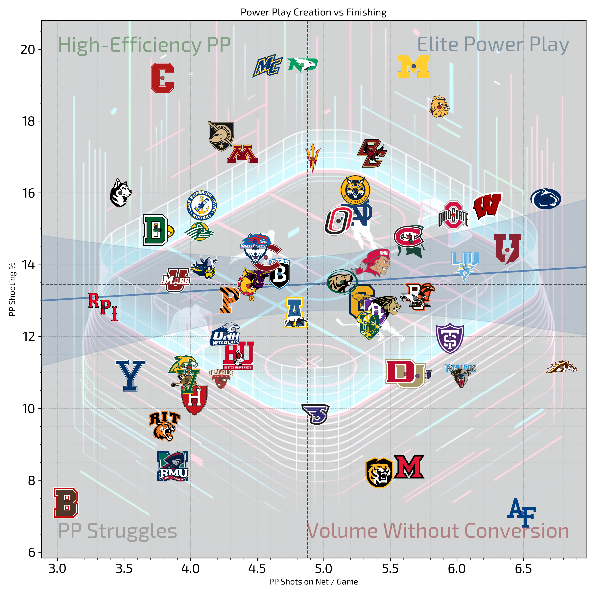

Independent data project · 2025–26 season
Following a college hockey season through data.
This earlier season project brought collection, cleanup, exploratory metrics, and visual storytelling together. It helped lay the groundwork for College Hockey Data.
What I built
The repository contains notebooks for incremental game collection, an updated NCAA play-by-play scraper, and analyses of player production, time on ice, conference races, and roster makeup. A player-atlas workbook explores where athletes come from and geocodes hometowns for mapping.
The collection and analysis work evolved across seasons. The 2025–26 folder shows those later experiments and revisions rather than the smaller first repository previously featured on this site.
Selected methods
- Gather and normalize game, roster, and play-by-play data from changing web sources.
- Keep season records in local data tables for repeated analysis.
- Calculate comparison measures, including per-60-minute player rates.
- Build conference and team charts to make patterns easier to discuss.
Some notebooks are exploratory and source sites can change. The repository is a working project, not a packaged data product.

